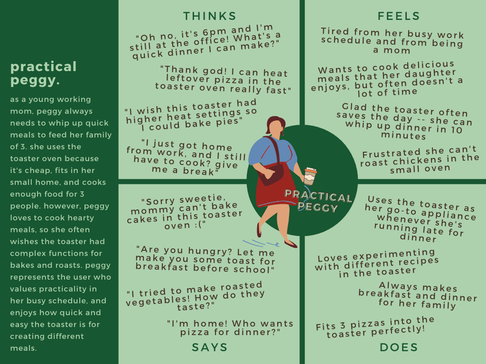
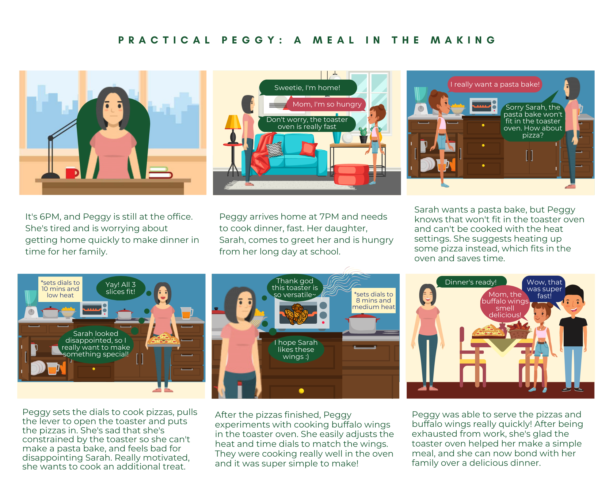

In this project, I explored how real users interacted with an interface and created personas based on my observations. I chose a toaster oven as my interface, as this is an easily accessible product that many people have in their homes. The process included the following steps:
Key features of the toaster oven that I observed individuals using were:
Some questions I asked my interviewees included:
I interviewed my mom, dad, and my friend because they represented a wide range of age, gender, and socioeconomic demographics. During these interviews, I noticed:
After considering my observations, I made two personas represented different users interacting with the toaster oven. This helped give more context to how users interact with the toaster oven and pushed me to think about what problems users might encounter.
The storyboard helped me better visualize a user's journey from start to end. I chose to create a storyboard for Peggy, as I think her interaction and challenges with the toaster oven are very relatable.
